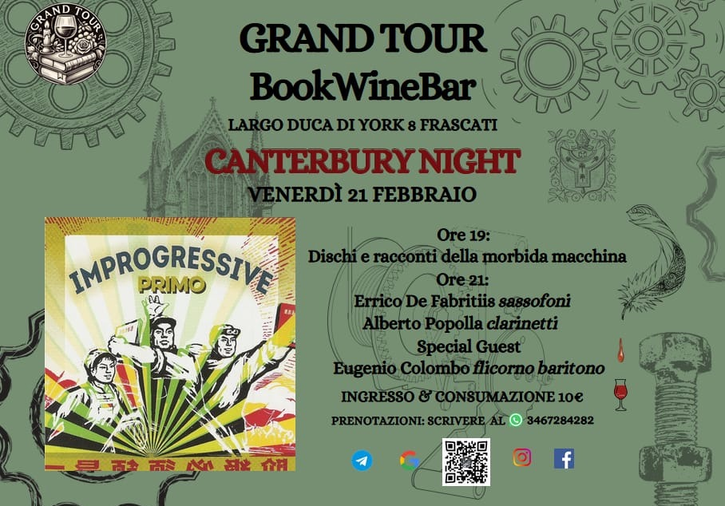

Incontri
Prossimi appuntamenti

8 febbraio 2026, ore 17.00
Competizione egemonica nel Golfo, transizione problematica in Siria, risoluzione sospesa a Gaza, crisi irrisolta tra Palestina e Israele, escalation militare tra Israele e Iran, interessi occidentali nell’area. Guerre per procura e instabilità sistemica. Nessuna di tali questione può venir compresa isolatamente, nessuna si esse può restare confinata a cronache riduttive. Quali prospettive in Medio Oriente?
Ne parliamo con Giulia Bertotto e Michele Crudelini, giornalisti di ByoBlu recentemente inviati speciali a Gerusalemme e altre località dell’area, e con l’imam Damiano Abbas Di Palma, studioso della cultura e della società iraniane e responsabile del centro islamico Imam Mahdi, e con Marco Hosseyn Morelli, studioso di geopolitica e responsabile relazione esterne dell’associazione islamica Imam Mahdi.
Data da stabilire
Syd Barrett is back!
Psichedelia. Storia, suoni e misteri
Patrick Edera: voce e chitarra
Appuntamenti settimanali 2025
Un tè con le Muse: letture e altri percorsi (giovedì dalle ore 18)
Laboratorio scritture: decostruire l’attualità (venerdì dalle 18)
Karaoke, jam e tutto ciò che è musica (sabato dalle ore 20)
Scacchi, Risiko e altre battaglie (tutti i giorni a tutte le ore)
In questa formula agile e varia, ogni giorno verrà focalizzato su un diverso modo di fare e condividere sapere. Il giovedì attraverseremo i libri e le altre pubblicazioni presenti nel Catalogo del Grand Tour degustando un buon té o qualche altra proposta del Menù. Il venerdì ci incontreremo come redazione aperta per parlare delle proposte di Scritture, pronti ad accogliere le proposte dei presenti. ll sabato ci saranno le serate di karaoke ma anche jam e performance e tutto ciò che è Musiche. Sempre a disposizione i giochi da tavolo.
Appuntamenti passati
Appuntamenti settimanali 2024:
Laboratorio filosofia (giovedì ore 18)
Aperilibri ad alta voce (venerdì ore 18)
Karaoke Paradise (sabato ore 20)
Risiko e altre battaglie (domenica ore 20)
Grande successo per il primo anno degli Incontri del Grand Tour. Le letture si sono svolte focalizzandosi ogni volta su diversi autori, storici e viventi. Le serate karaoke hanno portato grande partecipazione ed entusiasmo. I tavoli dei giochi sono stati occupati non soltanto la domenica. Il Laboratorio Filosofia ha esaminato aspetti, portata e influenze del “Tramonto dell’Occidente” di Oswald Spengler, elaborato durante il travaglio della Grande Guerra. Gli atti sono in preparazione.
Laboratorio filosofia 2024. La notte dell’Occidente:
«Ci si è proposti di predire il destino di una civiltà e, propriamente, dell’unica civiltà che oggi stia realizzandosi sul nostro pianeta, la civiltà euro-occidentale e americana, nei suoi stadi futuri.» Il filosofo tedesco introduce così la sua opera, chiedendosi se esista e quale sia la logica che muove la storia.
Per Spengler le civiltà sono organismi dallo sviluppo millenario, ognuna con un proprio mondo simbolico e un proprio destino, soggette a cicli di fioritura e decadenza. Nella sua concezione, la civiltà occidentale era giunta già un secolo fa all’ultimo stadio. E oggi, dopo il tramonto, a che punto è la notte?
Gli incontri esploreranno tale tematica aggiornandone termini e riferimenti. Particolare attenzione verrà posta alle scienze e alle arti, e quindi al tipo di percezione, che caratterizzano ognuna delle otto civiltà individuate da Spengler: babilonese, egiziana, antica, cinese, indiana, araba, messicana, occidentale.
Inoltre, si cercherà di comprendere se quella che è definita civiltà araba-magica mantiene una consistenza parallela a quella faustiana-occidentale. L’influenza del pensiero spengleriano sarà analizzata nell’idea di “scontro delle civiltà” di Samuel Huntington e nella “teoria del mondo multipolare” di Alexander Dugin.
«Un tempo non era permesso a nessuno di pensare liberamente. Ora sarebbe permesso, ma nessuno ne è più capace. Ora la gente vuole pensare ciò che si suppone debba pensare. E questo lo considera libertà.» Tali parole siano di stimolo per pensare il nostro tempo, comprenderne le trame e portarlo a compimento.
Conferenze. Cura di sé, cura del mondo. Psicologia, ambiente, società: riusciamo ad essere all’altezza di questo mondo tossico?


In concerto. La musica, per davvero


Serate di gala. Momenti speciali per progetti speciali
Iniziative
Petizioni trasporti-decoro urbano-musica: per il diritto ad una vita giusta.